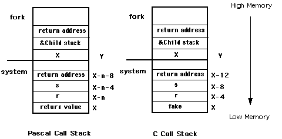

|
|
This Technical Note discusses how to make A/UX system calls from applications
developed in the Macintosh environment. This is useful to anyone porting an
existing Macintosh driver or application to work on A/UX as well.
[Aug 01 1990]
|
Introduction
A/UX 2.0 now runs a broad range of Macintosh applications. The A/UX Toolbox
allows most code developed for the Macintosh to run unmodified under A/UX. One
exception is Macintosh device drivers. Many developers are interested in also
making their Macintosh peripherals available to A/UX customers. If the
peripheral requires a custom driver that accesses hardware, the driver needs to
be modified to run under A/UX.
Split Decision
The A/UX Toolbox runs in "user" space in A/UX. This is a virtual, protected
memory space that shares the system resources with all other processes running
in "user" space. These processes are not allowed to access hardware directly.
Instead, they must make a request to the A/UX kernel through a mechanism
called a "system call" to deal with the hardware. The kernel, which runs in
"system space," then returns data, status, etc. back to the caller. The system
call is a well-defined interface that gives Unix
systems some degree of application portability.
Since any custom driver code must maintain the Macintosh interface at the
Toolbox and application level, and Toolbox code cannot touch the hardware, you
must split your driver into two pieces. The high-level Macintosh interface
portion stays in user space, and the low-level hardware dependent, Unix-style
interface becomes a Unix device driver in the kernel. So how do these two
pieces communicate? They have to talk to each other through the Unix system
call interface.
The code comprising the kernel portion of your driver must be adapted to do
things in a "Unix way," such as providing the standard routine interface
required of all Unix drivers, be multithreaded and reentrant, and not "hog" CPU
time by doing "busy waits." This Note does not cover these issues, but the
A/UX Device Drivers Kit (available through APDA) has example code and
documentation about the topic. There are also some good books available on
writing Unix drivers.
Is This A/UX or What?
If you want your code to work in either environment without change, you first
need to determine if you are under A/UX at run time. The best way to do this
is with the _Gestalt trap using the selector
gestaltAUXVersion to determine if A/UX is the underlying operating
system. Shown below is a function which returns 0 if A/UX is not present,
otherwise returns the major A/UX version number (1, 2, etc.). This code relies
on _Gestalt glue code available in MPW 3.2 and later.
/*
* getAUXVersion.c
*
* Copyright (c) 1990 Apple Computer, Inc.
*
* This file contains routines to test if an application is running
* on A/UX. If the Gestalt trap is available, it uses that, otherwise
* it falls back to HWCfgFlags, which will work on all A/UX systems.
*/
#include <Types.h>
#include <GestaltEqu.h>
#define HWCfgFlags 0xB22 /* Low memory global used to check if A/UX is running */
/*
* getAUXVersion -- Checks for the presence of A/UX by whatever means is
appropriate.
* Returns the major version number of A/UX (i.e. 0 if A/UX is not present, 1 for
* any 1.x.x version 2 for any 2.x version, etc.
*
* This code should work for all past, present and future A/UX systems.
*/
short getAUXVersion ()
{
long auxversion;
short err;
short *flagptr;
/*
* This code assumes the Gestalt glue checks for the presence of the _Gestalt
* trap and does something intelligent if the trap is unavailable, i.e.
* return unknown selector.
*/
auxversion = 0;
err = Gestalt (gestaltAUXVersion, &auxversion);
/*
* If gestaltUnknownErr or gestaltUndefSelectorErr was returned, then either
* we weren't running on A/UX, or the _Gestalt trap is unavailable so use
* HWCfgFlags instead.
* All other errors are ignored (implies A/UX not present).
*/
if (err == gestaltUnknownErr || err == gestaltUndefSelectorErr) {
flagptr = (short *) HWCfgFlags; /* Use HWCfgFlags */
if (*flagptr & (1 << 9))
auxversion = 0x100; /* Do Have A/UX, so assume version 1.x.x */
}
/*
* Now right shift auxversion by 8 bits to get major version number
*/
auxversion >>= 8;
return ((short) auxversion);
|
A/UX Code, Under MPW?
The main system calls used to access kernel driver routines are
open(), close(), read(), write(), and
ioctl(). Of use to applications is the routine creat() which
is included here as well. The A/UX system call mechanism is a trap #0
with the system call selector code in register D0. The
arguments are on the stack in the normal C calling convention, last argument
pushed first.
Note that different trap calls under A/UX have different procedures concerning
the use of registers and stack frames.In this Technote we are not trying to
document each possible case, so we limit the examples to show how the registers
and stack frame are used| with the open(),close(),
read(), write(), fork() and ioctl() A/UX
system calls. In the case of other A/UX system calls you have to disassemble
code compiled under the A/UX environment in order to find out how the
parameters are passed, and how the stack frames are set.
Since MPW does not contain any A/UX libraries and doesn't know about Unix
system calls, you need to use some assembly-language glue code around the trap.
Following is glue code for the common A/UX routines listed above. You can
extend your A/UX system call library by adding additional routines with
additional system call selectors. This glue code relies on the similarity
between A/UX C calling conventions and MPW C calling conventions, as well as
the similarity in the sizes of parameters (int variables are four
bytes in both systems). When these routines are entered the stack frame is
already correctly set up for the trap #0; if you are using other
languages or development systems, you may need to extend the glue to rearrange
parameters on the stack to match A/UX C calling conventions.
The error code from the call is returned in D0. In the Unix
environment, this error code is normally placed in the errno global
variable and D0 is set to -1 before return to the caller. Since
global variables are very bad for Macintosh device drivers, this glue code
relies on a special A/UX trap called _AUXDispatch which can return a
pointer to an A/UX errno global variable. The C functions
SetAUXErrno() and GetAUXErrno() are used to set and retrieve
this value. The _AUXDispatch trap is defined in an A/UX include file
/usr/include/mac/aux.h and you need this file to compile the C code. For more
information about the AUXDispatch trap, consult the A/UX Toolbox: Macintosh
ROM Interface manual. Lastly, all function names have been preceded by the
prefix "AUX" to distinguish them from their MPW C library counterparts (e.g.,
the A/UX read() function is named AUXRead() here).
; AUXIO.a -- Glue for A/UX I/O system calls
;
; Copyright (c) 1990 Apple Computer, Inc.
; All rights reserved.
;
; This module contains C callable routines to execute A/UX system (trap 0)
; calls. The parameters to these routines is exactly as they are described
; in the A/UX man(2) documentation. This means all char * parameters are
; NULL terminated C strings, not Pascal strings. They all presume that A/UX
; is in fact running. Certain death will result otherwise.
CASE ON ; For C
INCLUDE 'SysEqu.a'
IMPORT SetAUXErrno
;
; Here are all the routines and their C calling conventions:
; long AUXCreat (char *path, long mode);
EXPORT AUXCreat
; long AUXOpen (char *path, long oflag, long mode);
EXPORT AUXOpen
; long AUXClose (int fildes);
EXPORT AUXClose
; long AUXRead (long fildes, char *buf, long nbytes)
EXPORT AUXRead
; long AUXWrite (long fildes, char *buf, long nbytes)
EXPORT AUXWrite
; long AUXIoctl (long fildes, long request, long arg)
EXPORT AUXIoctl
; Some local entry points
ENTRY auxerr
ENTRY auxcommon
ENTRY auxexit
AUXCreat PROC
move.l #$8,D0 ; creat function selector
bra.b auxcommon ; Join common code
AUXOpen PROC EXPORT
move.l #$5,D0 ; open function selector
bra.b auxcommon ; Join common code
AUXClose PROC EXPORT
move.l #$6,D0 ; close function selector
bra.b auxcommon ; Join common code
AUXRead PROC EXPORT
move.l #$3,D0 ; read function selector
bra.b auxcommon ; Join common code
AUXWrite PROC EXPORT
move.l #$4,D0 ; write function selector
bra.b auxcommon ; Join common code
AUXIoctl PROC EXPORT
move.l #$36,D0 ; ioctl function selector
bra.b auxcommon ; Join common code
; Trivia of the month. The flow of the code is a little weird
; here because of a strange interaction between the assembler
; and the linker. Logically, auxcommon should go here, but what
; happens in that case is the assembler generates a byte branch
; instruction for the previous instruction, but then the linker
; cheerfully fills in the byte offset, which if auxcommon were
; the next instruction would be zero. At runtime, this causes
; the bra.b to get interpreted as a bra.w and of course the code
; flies off into never-never land. So we stick in some convenient
; intervening code to ensure the offset is never zero.
auxerr PROC ENTRY
move.l D0,-(SP) ; Push error code
jsr SetAUXErrno ; Set errno
add.w #$4,SP ; Remove parameter
move.l #$FFFFFFFF,D0 ; Set -1 for return value
bra.b auxexit ; Outta here
auxcommon PROC ENTRY
trap #$0 ; trap 0
bcc.b auxexit ; CC, no error
bra.b auxerr ; Do common error handling
auxexit PROC ENTRY
rts
ENDPROC
|
The second argument to the AUXIoctl call needs some special attention.
The A/UX header file /usr/include/sys/ioctl.h describes the format of
request. These four bytes hold several fields describing the data
format. Normally, macros defined in the ioctl.h header file take care of
packing these fields. Make sure you use the same format when you construct
your request argument. Just use the example commands in the
/usr/include/sys/*ioctl.h files as a reference.
Following are the C functions to properly get and set the A/UX errno
global variable:
/*
* AUXErrno.c
*
* Copyright (c) 1990 Apple Computer, Inc.
* All rights reserved.
*
* This file contains routines to properly get and set the standard Unix global
* errno from within an Macintosh application. It uses the AUXDispatch trap
* to get a pointer to the address to be set.
*/
#include <aux.h>
void SetAUXErrno (err)
long err;
{
long *errnoptr;
if (!getAUXVersion ())
return; /* No A/UX, do nothing */
errnoptr = 0;
AUXDispatch (AUX_GET_ERRNO, (char *) &errnoptr);
/*
* If errnoptr is still NIL, AUXDispatch failed so do nothing
*/
if (errnoptr)
*errnoptr = err;
return;
}
long GetAUXErrno ()
{
long *errnoptr;
if (!getAUXVersion ())
return (0); /* No A/UX, return noerror */
errnoptr = 0;
AUXDispatch (AUX_GET_ERRNO, (char *) &errnoptr);
/*
* If errnoptr is still NIL, we're not under A/UX, or AUXDispatch failed
* so do nothing
*/
if (errnoptr)
return (*errnoptr);
else
return (0);
|
Back to top Use of the fork() call under A/UX MultiFinder emulation
The following advice concerns the use of the A/UX fork() system call
under the MultiFinder emulation mode. Under A/UX the kernel does not separate
the data region of the parent process for the child after a fork()
call. If we do a simple fork we have suddenly two MultiFinder processes
running, and they both will share the same resources. The MultiFinder memory
space is set up as shared memory, and since the child in UNIX inherits all
shared memory segments from the parent across the fork, both the parent process
and the child process will be using the same stack. This will lead to chaos if
the child pushes something to the stack while the parent removes the data, or
vice versa. The child should have a separate stack until we have done an
exec(), then the child process has it's own memory world.
So what we need to do is to set up a separate data area for the child's process
stack use. The child process will get its own data area by allocating enough
stack space by the parent before the fork(), and passing this space to
the fork() system call using a special fork() call, which is
explained later.
The fork() system call copies the current stack frame of the parent
onto the new stack space, resets the stack pointer to point to the new stack in
the child, and then issues the trap to jump into the Unix kernel to continue to
set up the new process structures. This enables the child to access information
from the stack in the same manner as any other process. Details to keep in mind
while using this mechanism are:
- Allocate memory for the stack which is guaranteed not to be freed until after the child process has completed its exec.
- Pass the address of the high memory end of the allocated memory for the stack to
fork(), not the low memory address.
- The address to be passed as the caller-environment argument is computed differently depending on whether the calling routine has a Pascal or a C stack frame. The examples given later show how the calculation is done.
- The calling routine needs to be very careful about what the child does before
exec() or exit(). Pointers and structures accessed via the stack will point to the parent's copy, since only the local/current frame has been copied.
In particular allocation of large arrays should be done only after ensuring
that the space allocated for the child stack is sufficiently large to copy the
entire stack frame. This is important because arrays could be allocated on the
stack, and there could exist array sizes which cause the current stack frame
size to exceed that of the allocated child stack space. This will result in
only part of the current stack frame being copied over onto the child. In such
cases seemingly normal accesses from the child will end up being in the wrong
area and cause strange behavior (the screen is locked up, bus errors are
frequent etc.).
Using malloc() and free() to allocated space for such large
buffers on the heap will eliminate this problem. However one needs to be aware
that though the space is allocated on the heap, the space is accessed via a
pointer which is on the current stack frame. This means that accesses from the
child to the space in question will result in accesses to the parent's copy.
e) The parent must clean up of the allocated space for the interim stack for
the child after the child has exit:ed.
The following picture illustrates how the stack parameter passing is done with
a Pascal stack and a C stack:

n = sizeof(Ret. value)
X is determined thus; X is determined thus:
X = &r + sizeof(r) + X = &fake
sizeof(Ret. value)
The design issue of returning to the caller from fork() (as opposed to
providing a fork()-exec() combination which does not return from the
fork but goes ahead and execs the required program as well) should be favored
after looking into the problem carefully. Providing a separate fork()
has advantages in the form of letting the user set up communication channels
between the parent and child before exec(), or allowing the user to
set up the appropriate environment before exec(). The problems has to do with
the possibility of the not-so-wary programmer using the feature improperly and
leaving two Macintosh environments running simultaneously, which will lead to
chaos very quickly. Thus use of fork() from within an application must
be done with extreme caution.
Given below is an example of the use of AUXFork(), a special
fork() implementation. This example also shows how to set up the A/UX
environment.
#define STACKBYTES 2048 /* size in bytes */
#define STACKSIZE STACKBYTES/sizeof(long)
unsigned long *childstack;
pascal long AUXDispatch(selector,p)
short selector;
char *p;
extern 0xABF9;
#define AUX_GET_ENVIRON 11 /* get pointer to environ */
char **auxenviron;
extern int AUXFork(), AUXExecl(),AUXWait(), AUX_exit();
int system(s,fake)
char *s;
int fake;
{
int status, pid, w;
register int (*istat)(), (*qstat)(), (*cstat)();
int GetAUXErrno();
long aux_errno;
childstack = (unsigned long *) (NewPtr (STACKBYTES));
/* copy the environment */
AUXDispatch(AUX_GET_ENVIRON,(char *)&auxenviron);
if((pid = AUXFork(&childstack[STACKSIZE],&fake)) == 0) {
(void) AUXExecl("/bin/sh", "sh", "-c", s, 0);
(void) AUX_exit(127);
}
else {
if (pid < 0) {
DisposPtr((char *)childstack); /* Fork failed */
return(-1);
}
else {
w = auxwait(&status);
DisposPtr((char *)childstack);
return((w == -1)? w: status);
}
}
|
In the above example, the parent sets up the space for the child stack, gets a
pointer to the environment to be passed to exec(), and calls
AUXFork(). A dummy variable 'fake' is passed as a parameter to
system() to enable AUXFork() to copy the current stack frame
on to the child stack. After the child exits, the parent cleans up the space
allocated to the child stack. AUXWait() is used to block the parent
until the child exits or terminates. The parent has to wait for the child to
exit or terminate for this scheme to work properly within MultiFinder, If the
child does not exit or terminate, the Macintosh environment is blocked and may
lose a number of events and signals necessary to maintain its state. Thus use
of fork makes sense only if we are sure that the child exits or terminates
without taking too much time to execute.
The following example shows how to write AUXFork():
; AUXFork.a -- Glue for A/UX fork call
;
; Copyright (c) 1990-91 Apple Computer, Inc.
; All rights reserved.
;
; This module contains C callable routines to execute A/UX fork
; calls. This function presumes that A/UX is in fact running.
; Certain death will result otherwise.
INCLUDE 'Traps.a'
CASE OBJECT
EXPORT AUXFork
; AUXFork routine
;
;
; pid = AUXFork(new_top_sp, caller_env)
;
; new_top_sp: This is one past the highest address that is
; in the new stack area.
; caller_env: This is an address on the current stack that is
; one past the highest address in the stack frame
; of the calling routine.
;
; return values -
; in parent: pid == -1 failure
; pid == child success
; in child: pid == 0
;
;
; To call auxfork -
; Allocate memory for the child's stack which is guaranteed not to
; be freed until after the child process has completed its exec. Remember
; to pass the end of that memory region to auxfork, not the beginning. The
; address to be passed as the caller_env argument is computed differently
; depending on whether the calling routine has a pascal or C stack frame.
; Note that the calling routine needs to be very careful about what
; the child does before exec or exit. Only the local frame has been copied
; and only the frame pointer has been fixed up. For example, if the calling
; routine has an array on the stack and uses a pointer to it for efficiency
; then the child's pointer will point at the parent's copy, not the child's.
; Also, if the parent must be careful not to delete or change anything the
; child may be using. Caveat emptor!
;
;
; How to compute the caller_env argument -
;
; Pascal: compute ((char*)&leftmost_argument) + sizeof(leftmost_argument)
; + sizeof(function return value, if any) and pass that.
;
; e.g. pascal Boolean system(short r, long s, long c)
; auxfork(&new_stack[LENGTH_OF_STACK], (&r + sizeof(shor)
; + sizeof(Boolean)))
;
; C: add a fake rightmost_argument and pass the address of that.
;
; e.g. int system(short r, long s, long c, long fake)
; auxfork(&new_stack[LENGTH_OF_STACK], &fake)
;
;
AUXFork PROC
; make a copy of the stack frame
move.l 4(a7),a0 ; just past end of new stack
move.l 8(a7),d1 ; just past end of caller environment
move.l d1,d0 ; length = end of caller
sub.l a7,d0 ; ... - current stack
sub.l d0,a0 ; new stack -= length of old
move.l a0,d0 ; save the stack base for after copy
move.l a7,a1 ; don't want interrupts to trash stack
@2 move.w (a1)+,(a0)+ ; word aligned (it is a stack!)
cmp.l a1,d1 ; done?
bhi.s @2 ; ... nah, keep copying
move.l d0,a0 ; ... yep, save new stack pointer
; now, do the fork
move.l 2,D0
trap #0
; D1 == 0 in parent process, D1 == 1 in child process.
; D0 == child pid in parent, D0 == parent pid in child.
bcc.b @0 ; did we fork?
move.l #-1,D0 ; ... nah, failure
@1 rts
@0 tst.b D1 ; who am i now?
beq.b @1 ; ... parent, get out of here
; ... child, so fudge registers
move.l a6,d1 ; offset of fp = fp
sub.l a7,d1 ; ... - old stack
move.l a0,a7 ; set up new stack pointer
move.l a0,a6 ; new frame pointer = sp
add.l d1,a6 ; ... + offset of fp
clr.l (a6) ; the fp points to never-never land
lea do_exit,a1 ; and a guaranteed exit
move.l a1,4(a6) ; becomes the return address
move.l #0,D0 ; the child returns
rts
do_exit move.l 1,D0
trap #0
ENDP
|
Back to top
Issues with using A/UX system calls in the MultiFinder environment
General:
The following comments describe how various A/UX system calls behave under the
MultiFinder environment:
Blocking / Sleeping system calls:
Many of the system calls can result in situations which cause the calling
process to go to sleep awaiting an event which wakes it up .For instance
opening a pipe from process and writing to the pipe will result in the write
waiting until another process opens the pipe for reading. Such situations
should be avoided when using the system calls from within a Macintosh
application.
Depending on the priority at which the sleep occurs, the application can cause
the entire Macintosh environment to hang (when the sleep is non interruptible),
or the system call returns with error number indicating an interrupted system
call. This will happen because the blocked process is sleeping at a priority
from which it can be woken up by signals used to implement VBL's or other
Macintosh aspects - and which is almost always bound to happen. One way to get
around this problem is by using options which prevents the blocking and spin in
a loop polling the result from the system call, until we are guaranteed to have
a situation wherein the system call will not block. However, polling in this
manner should be done only for very short intervals, and when we are sure that
the polling will end in success in a short time. If this is not the case, then
the application doing the polling will be stuck in the polling loop without
giving up the CPU for other applications ( which is extremely unfriendly
MultiFinder behavior).
Caution About Blocking On Read Calls
Be aware that reads from drivers may block the calling application until some
data arrives. Since the complete MultiFinder environment exists as a single
process under A/UX, you do not want a pending read to block for an extended
period of time. This problem is not unique to A/UX--the same thing also
happens under the Macintosh OS. In a serial driver, for example, the
application should check to see if any characters have been received and are
waiting to be read before issuing the read call. The read() should
then request only that many characters. This is implemented differently under
A/UX than under the Macintosh OS. The available character count is determined
by doing an ioctl() system call to the device in question. The
terminal ioctl() commands to do this are listed in the A/UX manuals
under "termio" in section 7. The FIONREAD ioctl() command
returns the number of characters waiting to be read from the A/UX serial
driver. This can cause problems when using the IOP-based serial driver on the
Macintosh IIfx; for more information on this topic, refer to
M.PT.SerialUnderAUX.
sbrk and brk:
There is no consistent way for an application to use sbrk() and
brk() properly and ensure that other applications within the
MultiFinder partition are aware of the new sbrk() and brk()
limits and behave appropriately. Thus it doesn't make sense to use these A/UX
system calls. sbrk() and brk() are mostly used to get
additional data space, and this can already be achieved by using either
NewPtr()/NewHandle() or malloc().
setuid / setgid / setreuid / setregid / nice/ setgroups / setcompat /
setsid / setpgid / plock/ ulimit/ phys:
These A/UX system calls have the same problem as above - i.e. we don't want to
modify any process related A/UX structures/information which in turn affects
all the applications running under the MultiFinder partition.
sethostid / sethostname / setdomainname / sysacct / reboot / powerdown /
nfs_getfh / adjtime:
It is not recommended to affect system wide structures/data with user processes
(allowed only for super user).
signal / ssig / sigvec / sigblock / sigsetmask / sigpause / sigstack /
sigpending / sigcleanup:
Synchronization with signals and related calls have the same problem as earlier
stated, but with additional complexities. While not providing signals would
eliminate the problem of maintaining signals on a per-application basis within
MultiFinder, a subset of the signals functionality has to be
provided to enable applications to deal properly with certain system calls.
Otherwise these calls may result in the signals being raised to indicate errors
or other status information. (e.g the SIGPIPE signal is raised if a
process sends data on a broken stream set up via the socket system call.).
Signals necessary to resolve the situations mentioned earlier should be
supported, but all other signals should return without accomplishing
anything.
Most of the signal functionality can be accessed via the special
AUXDispatch trap.
Pause/ alarm/ kill/ setitimer:
If only a subset of the functionality of signals is going to be provided it
does not make much sense to make use of these calls.
Use of pipes:
Blocking on reading an empty pipe and blocking on writing more than
PIPE_MAX bytes of data should not cause the Mac environment to hang
(PIPE_MAX is defined in A/UX to 8192). These situations can be avoided
in the following ways:
- Ensure that all writes greater than
PIPE_MAX bytes are broken up into smaller chunks (this may involve a bit of book-keeping and access to additional buffer space.).
- Use the
fcntl() A/UX system call to set that appropriate file descriptors returned by pipe() to use the O_NDELAY flags (or the _NONBLOCK semantics provided by POSIX). This guarantees that both the above cases of blocking are avoided. However, both read() and write() returns with a count of 0 which is indistinguishable from an end-of-file indication. This, along with judicious use of the polling strategy to avoid blocking mentioned above, can be used to prevent a lot of potential blocking situations.
In general use of named pipes is much simpler in a Macintosh application. This
because named pipes gives the programmer the possibility to use standard
Macintosh File I/O for inter-application communication. Use of regular pipes to
set up communications between a parent process and related child/grandchild
processes has to be done with great care. The pipe descriptors have to be set
up appropriately for communication, before doing the exec(), but after
the fork(). Improper usage may result in two separate MultiFinder
processes running - which results in very quick deterioration of the system
environment.
The requirement of cleaning up the interim child stack used during a
fork() imposes the restriction of the parent (MultiFinder) having to
wait for the child to exit. This means that all communication involving pipes
between related processes must not block, and moreover must complete relatively
quickly.
Messages:
Message operations should ensure that they do not cause the calling process to
block. In the case that they result in blocking, the operations invariably fail
and return an error number specifying an interrupted system call. The caveats
mentioned about blocking hold true in situations where messages could block.
Semaphores:
Semaphores on AT&T SysV based Unix systems are fairly complicated. With the
addition of further restrictions imposed by the limitations of MultiFinder
running under A/UX, semaphore usage from within a Macintosh application should
be attempted with utmost care. By the very nature of the operation of
semaphores, sleeping/blocking situations are bound to arise. Usage of the
IPC_NOWAIT flag prevents sleeping/blocking. Thus it's possible to
implement a conditional semaphore, whereby the MultiFinder process does not
sleep on behalf of the application using semaphores (when it cannot do the
required atomic action).
As with its usage from a regular Unix process, care should be taken to avoid
situations leading to a deadlock or situations where deadlocks could happen.
For instance this is true in the case where one process locks a semaphore and
then exits without resetting the semaphore. Other processes will find the
semaphore locked even though the process which had done the locking is no
longer around. To avoid such problems the SEM_UNDO flag should be used
with semaphore operations. Here again the application developer needs to be
aware of the problems associated with blocking which is mentioned above.
Use of lockf:
The lockf() system call can be used if it is done judiciously. Using
lockf() with the mode set to F_TLOCK is recommended; this
will return with an error if a lock already exists for the region of interest
to be locked.
Flock:
A request to lock (flock() system call) an object that is already
locked will cause the caller to block until the lock is acquired, unless
LOCK_NB (nonblocking lock) is used which results in nonblocking
semantics to be applied.
Networking:
accept(): This call will result in the caller blocking until a connection is present if no pending connections are present on the queue, and the socket in question is not marked as non-blocking, This situation needs to be avoided. recv()/recvfrom()/recvmsg(): These calls would result in the call blocking until a message arrives if no messages are available at the socket, unless the socket is marked nonblocking.select(): Timeout should not be 0 - this would result in blocking indefinitely.send()/sendto()/sendmsg(): These calls will block if no message is available at the socket to hold the message to be transmitted, unless the socket has been placed in the nonblocking mode.socket(): Use of setsockopt() to set options on the socket connection should be done carefully. Situations which could result in the indefinite blocking should be avoided (for eg. setting SO_LINGER when the socket is opened in the reliable delivery mode would result in blocking when the socket is closed, until the socket decides that it is unable to deliver the information).
nfssvc / async_daemon:
These system calls cannot be called directly from the Macintosh world because
these calls never return. To use these calls we need to first fork() a
new process and then exec() a program containing this call as the
child process. Additional mechanism in the form of a nonblocking wait for the
parent (perhaps wait3()) needs to also be ensured.
ioctl:
The ioctl() A/UX system call is provided to enable programs running on
Unix to access all the peculiarities of specific devices in cases where the
standard I/O library lacks the necessary capabilities. Applications or programs
which need to do this require device specific knowledge relevant to A/UX. The
recommended way to use ioctl() is to write a pure Unix program, a
toolbox (hybrid) program, or a small glue code snippet inside the Macintosh
binary application using the ioctl() system call to accomplish A/UX
specific functionality.
Back to top
Conclusion
The routines presented here show basic techniques for accessing A/UX system
services. By properly using these and other system calls, you can extend your
Macintosh device drivers and applications beyond the limits of the Macintosh OS
without having to ship a special version of your application for A/UX.
Back to top References
A/UX Device Drivers Kit, APDA
A/UX Programmer's Reference, Section 2.
Writing A Unix Device Driver, Egan & Teixeira, Wiley.
The Design of the UNIX Operating System, Bach, Prentice-Hall
M.PT.SerialUnderAUX
Unix is a registered trademark of UNIX Development Laboratories, Inc.
Back to top Downloadables
|

|
Acrobat version of this Note (112K).
|
Download
|
|